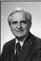

Beginning in the late 1970s, the ARPAnet connected together the scientists and engineers who were working on some new ideas that eventually congealed into the Internet and the GUI user interface which, by the end of the Twentieth Century, had become ubiquitous. (These things were invented neither by Microsoft nor by Al Gore.)
One ARPAnet discussion forum was the "WorkS" electronic mailing list, in which participants hashed out design criteria for personal computerized workstations that were intended to increase productivity of knowledge workers.
One message posted to WorkS in 1984 was from Douglas Engelbart, who while working at Stanford Research Institute had invented the computer mouse. He related the alternative schemes for pointing and clicking that he and his research group had examined.
Date: 14 May 1984 11:43 PDT
From: DCE.TYM@OFFICE-2.ARPA
CC: WBD.TYM@OFFICE-2.ARPA, KIRK.TYM@OFFICE-2.ARPA
Subject: Foot mouse, knee controller, nose pointer; more research
Re: WorkS Digest V4 #22
At SRI in the 1960s we did some experimenting with a foot mouse. I found that it was workable, but my control wasn't very fine and my leg tended to cramp from the unusual posture and task. I assume that these would be overcome eventually by practice.
I got to thinking about skill development with fine foot control, and realized that most of us developed a very high degree of fine control with the accelerator pedal. I tried controlling vertical cursor position with such a pedal, and it worked quite well. Thinking about concurrent horizontal control, I realized that I can swing my knee from side to side with fairly good control (in terms of fraction of the total range of swing). That worked fairly well, better, I found, than with the foot mouse.
Then I migrated the vertical actuator from the floor pedal to an up-down bar actuated by the knee--which, I reasoned, was controlled by foot/ankle actions against the immovable floor (to raise or lower the knee) that would be essentially the same as when using a pedal. So we had a compound pair of actuators operated by a knee--up and down for vertical cursor control, right and left for horizontal. It was natural to learn, and gave better control immediately than did the foot mouse (I believe we called the latter our "skate"), but I tended to get leg cramps from this as well as the skate.
About that time I also rigged up a mechanism that utilized a lightweight helmet for the user to wear: turning his head from side to side would move the cursor horizontally, and nodding the head up and down would move the cursor vertically. This looked a bit strange, but it worked. AND this also gave me cramps, in the neck, after ten minutes or so.
I don't think that our experiences would be enough to discard any of these possibilities from a list of research candidates. The cramping I think would pass as skill developed, and the degree of control achievable has to be judged after more practice than we gave ourselves.
The hand mouse didn't have these early problems, and gave good results with considerably less practice than these devices seemed to require to get past the cramping stage.
We thought about eye control, but at the time didn't want to spend the money to implement it.
We had many things, at other levels and domains of an "augmentation system" that I wanted to explore, besides the best means for concurrent screen-selection and character-entry operation. We finally settled for the mouse in one hand and the chord keyset in the other--and went on with other system pursuits.
I have no particular conviction that the hand-controlled mouse will be the best screen-select control means that will emerge; and I applaud any pursuit of better means.
I assume that the end objective is for best overall, concurrent control and input means. Perhaps a combination of eye pointing, hand controls (including character input), and coded-voice input might be the winner--or even more parallel motor channels? Any such system would have to be evaluated for a specific working context, though. For instance, what is best would depend upon such things as the level of user training assumed, the responsiveness of the system, how much concurrency can be harnessed in simultaneous task pursuit by the system, the range of media being handled (e.g., text, graphics, color, dynamics, voice, video frames, people-intercom control...), etc.
Doug Engelbart
Tymshare
Note how this forward-thinking researcher was already anticipating the widespread use of the technologies of QuickTime, MPEG, RealPlayer, CU-SeeMe, NetMeeting, etc.--in a message sent out only 4 months after Apple Computer unveiled the first Macintosh!